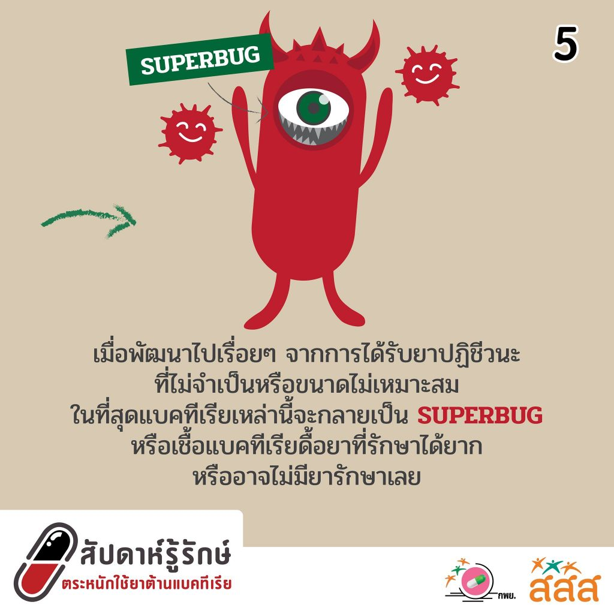
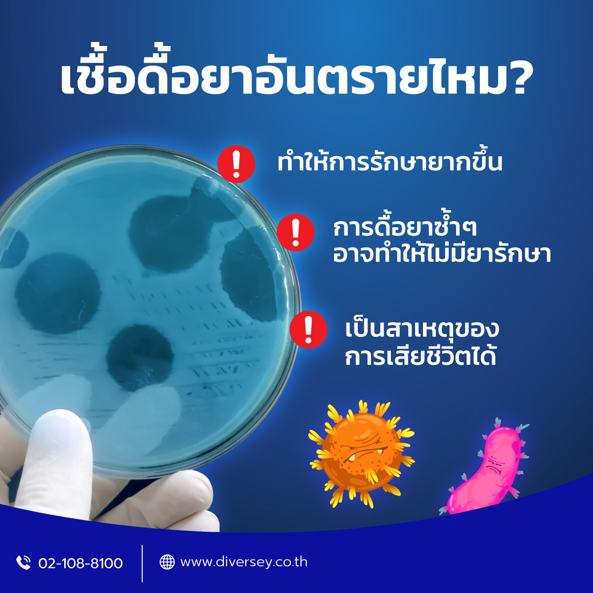

การดื้อยาต้านจุลชีพ (Antimicrobial Resistance หรือ AMR) คือ สถานการณ์ที่เชื้อจุลชีพ (แบคทีเรีย, ไวรัส, เชื้อรา หรือปรสิต) มีความสามารถในการต้านทานผลของยาที่เคยใช้รักษามันได้ ผลจากการดื้อยานี้ทำให้การรักษาโรคติดเชื้อเป็นไปได้ยากขึ้นและมีความเสี่ยงต่อการเกิดโรคที่อาจจะลุกลามหรือไม่สามารถรักษาได้

ปัญหาเชื้อดื้อยาเป็นปัญหาระดับโลกที่ทุกประเทศต้องมีมาตรการรับมือ โดยจากสถิติปี 2019 พบว่าเชื้อดื้อยาเป็นสาเหตุของการเสียชีวิตมากถึงราว 4.95 ล้านคนทั่วโลก และข้อมูลของประเทศไทยการศึกษาเบื้องต้นพบมีการติดเชื้อดื้อยาประมาณปีละ 88,000 ราย เสียชีวิตประมาณปีละ 38,000 ราย ซึ่งเชื้อดื้อยานี้มักเป็นเชื้อแบคทีเรียที่ไม่สามารถกำจัดได้โดยการใช้ยาปฏิชีวนะ (antibiotic) ตามปกติ
เชื้อดื้อยา คืออะไร?
เชื้อดื้อยา คือเชื้อโรคที่สามารถทนทานต่อยาปฎิชีวนะที่เคยใช้ได้ผลในการฆ่าเชื้อชนิดนั้นมาก่อน ทำให้ยาปฎิชีวนะนั้น ไม่สามารถรักษาการติดเชื้อแบคทีเรียชนิดนั้นได้อีก เชื้อดื้อยามักเป็นเชื้อโรคในกลุ่มแบคทีเรีย สามารถอยู่ในสิ่งแวดล้อมได้นาน หากเป็นเชื้อแบคทีเรียดื้อยาที่ก่อโรค เมื่อมีการติดเชื้อก็จะทำให้เกิดอาการป่วยที่รุนแรงและการรักษาก็จะซับซ้อนมากขึ้นด้วย
เชื้อดื้อยา เกิดจากอะไร?
สาเหตุสำคัญที่ทำให้เกิดเชื้อดื้อยาคือการใช้ยาปฏิชีวนะอย่างพร่ำเพรื่อ หรืออย่างไม่เหมาะสม เช่น เป็นหวัดแล้วกินยาปฏิชีวนะโดยไม่จำเป็น เพราะโรคหวัดมักเกิดจากเชื้อไวรัสซึ่งไม่จำเป็นต้องใช้ยาปฏิชีวนะ และมักจะหายได้เองเมื่อรักษาตามอาการ แต่จะมีความเชื่อว่าถ้ารู้สึกเจ็บคอ มีน้ำมูก ให้รับประทานยาปฏิชีวนะ หรือการรับประทานยาปฏิชีวนะเมื่อมีอาการท้องเสียบางวัน หรือมีการบาดเจ็บ เป็นแผล ซึ่งอาการเหล่านี้ไม่จำเป็นต้องใช้ยาปฏิชีวนะ และแนะนำให้มีการรักษาตามอาการ
การซื้อยารับประทานเอง การแบ่งยากันใช้ หยุดยาเอง หรือรับประทานยาไม่ครบก็เป็นอีกสาเหตุที่ทำให้เกิดเชื้อดื้อยา
สาเหตุที่พบได้บ่อยอีกสาเหตุหนึ่งคือ การใช้ยาปฏิชีวนะ หรือนอนโรงพยาบาลเป็นเวลานาน ก็เพิ่มความเสี่ยงและอาจทำให้เกิดเชื้อดื้อยาได้
เชื้อดื้อยา อันตรายไหม?
การติดเชื้อดื้อยามีอันตรายต่อสุขภาพและเป็นสาเหตุของการเสียชีวิตได้ การติดเชื้อดื้อยาจะทำให้ยาปฏิชีวนะที่เคยฆ่าเชื้อได้ ไม่สามารถฆ่าเชื้อนั้นได้อีกต่อไป จำเป็นต้องใช้ยาตัวอื่นที่อาจให้ผลการรักษาที่ด้อยกว่า มีพิษและผลข้างเคียงมากกว่า และมีค่าใช้จ่ายสูงกว่ายาที่เคยใช้แล้วได้ผล ซึ่งหากมีการดื้อยาซ้ำอีก ก็จะทำให้การรักษายากขึ้นอีก หรืออาจไม่มียาปฏิชีวนะที่สามารถฆ่าเชื้อนั้นได้อีก นอกจากนี้หากมีการใช้ยาปฏิชีวนะอย่างพร่ำเพรื่อจะทำให้แบคทีเรียตัวดีที่อาศัยอยู่ในร่างกาย ที่คอยรักษาสมดุลของร่างกายซึ่งพบที่ ผิวหนัง ช่องปาก และทางเดินอาหาร ถูกทำลายไป แต่เชื้อแบคทีเรียที่ดื้อยาจะยังมีชีวิตอยู่ได้ และเพิ่มจำนวนมากขึ้น ทำให้ร่างกายเสียสมดุลและเป็นโรคต่าง ๆ ตามมา เชื้อดื้อยานอกจากจะก่อโรคในผู้ป่วยที่ติดเชื้อแล้ว ยังสามารถปนเปื้อนในอาหาร น้ำ และสิ่งแวดล้อม และแพร่กระจายไปยังผู้อื่น แล้วทำให้ผู้อื่นป่วยเป็นโรคติดเชื้อดื้อยาได้อีกด้วย
การติดเชื้อดื้อยาในโรงพยาบาล
การติดเชื้อดื้อยาในโรงพยาบาล หมายถึง การติดเชื้อที่เกิดขึ้นกับผู้ป่วยที่เข้ารับการรักษาในโรงพยาบาลมากกว่า 2 วัน และมีการติดเชื้อดื้อต่อยาที่เคยมีประสิทธิภาพต่อเชื้อชนิดนั้นมาก่อน โดยเป็นยาที่มีใช้ในปัจจุบันตั้งแต่ 3 กลุ่มขึ้นไป ซึ่งเป็นปัญหาสาธารณสุขที่สำคัญในปัจจุบัน ซึ่งมีสาเหตุมาจากสาเหตุที่กล่าวไปแล้วข้างต้น
รู้ได้อย่างไรว่าเชื้อดื้อยา
ปกติแล้วจะไม่สามารถทราบได้ว่ามีเชื้อดื้อยาอยู่ในร่างกายหรือไม่ ต้องมีการตรวจและเพาะเชื้อทางห้องปฏิบัติการว่าเป็นเชื้อชนิดใด แต่มีข้อสังเกตเบื้องต้นคือ เมื่อมีอาการป่วย แล้วมีการรักษาแต่อาการไม่ดีขึ้น ก็อาจสงสัยได้ว่ามีการติดเชื้อดื้อยา

|